❤

点击展开或收起
鼓浪屿 （地址：福建省厦门市厦门岛西南）
1.标签 4.6分 5A 万国建筑 沙滩
2.简介
鼓浪屿，一个随意行走的小岛。位于厦门岛西南隅，与厦门市隔海相望，素有“海上花园”之誉。宋时
鼓浪屿原名圆沙洲、圆洲仔，因岛西南有一海蚀岩洞受浪潮冲击，声如擂鼓，自明朝雅化为今名。岛上气候宜
人，四季如春，无车马喧嚣，处处鸟语花香，宛如一颗璀璨的“海上明珠”，镶嵌在厦门海湾的碧海绿波之中。步
入小岛，你能嗅到她慵散而迷人的味道。石板路，老巷子，蜿蜒石墙，绿绿的叶片，淡雅开放的花儿，这一切都
在海风轻柔的吹动下，静静等候着时光。色彩鲜艳的欧式洋房，秀丽怡人的环鼓海岸风景线，还有那些精致纤巧
的小店，那一瞬，真不知自己是在何时，何处。随心所往，去哪儿也不会让你失望。轻轻的浪拥声，菽庄花园带着
江南园林的秀雅，却也不是海边花园的大气。拾级而，上，便是我国唯一的钢琴博物馆，带着历史烙印的钢琴上似乎
还留着主人抚摸过的痕迹。这琴声是需要静静聆听的，穿越时空的心灵之音，不知诉说了多少故事。
3.开放时间
全天开放。
4.联系方式
官网
http://www.xmferry.com/
电话
0592-2060777
5.交通信息
轮渡:外地游客从厦门国际邮轮中心乘坐轮渡，至鼓浪屿的三丘田码头或内厝澳码头。
(1)厦门邮轮中心厦鼓码头至鼓浪屿内厝澳码头:
一、普通游船
运营时间: 7:10- 17:30 (夏季18:30)
航线类型:旅游客运航线
航程时间:约20分钟
乘坐对象:所有乘客
优惠对象: 1.游客:每名成人可免费携带一名身高1.2米以下儿童;身高1.2- -1.5米的儿童和持有
中华人民共和国民政部制发的革命伤残军人证的革命伤残军人可购买半价优惠票票。票价: 35元/人
二、豪华游船
运营时间: 7:10- -17:30 (夏季18:30)
航线类型:豪华旅游客运航线
航程时间:约20分钟
乘坐对象:所有乘客
优惠对象:每名成人可免费携带一名身高1.2米以下儿童;身高1.2- -1.5米的儿童和持有
中华人民共和国民政部制发的革命伤残军人证的革命伤残军人可购买半价优惠票。票价: 50元/人
(2)厦门邮轮中心厦鼓码头至鼓浪屿三丘田码头:
运营时间: 7:10- -17:30 (夏 季18:30)
航线种类:旅游客运航线
航程时间:约20分钟
乘坐对象:所有乘客
优惠对象: 1.游客:每名成人可免费携带一名身高1.2米以下儿童;身高1.2- -1.5米
的儿童和持有中华人民共和国民政部制发的革命伤残军人证的革命伤残军人可购买半价优惠票。票价: 35元/人
环鼓航班票价:根据淡旺季不同，实行相应票价
①周一至周五:商务舱158元/人，贵宾舱258元/人
②周六至周日:商务舱208元/人，贵宾舱308元/人
③元旦、春节、清明、五一、端午、中秋、国庆等假日期间:商务舱258元/人，贵宾舱358元/人
6.门票信息
无需门票。鼓浪屿免费开放，内部景点单独收费。(鼓浪屿5大景点联票90元包含日光岩、菽庄花园、皓月
园、风琴博物馆、国际刻字馆。鼓浪屿五大景点联票免费政策: 1、持《残疾证》、《残疾军人证》人员; 2、现
役军人(含离退休军队干部); 3、70周岁(含70周岁)以上老人凭有效身份证件; 4、6周岁(含6周岁)以下或身高1
.2米(含1.2米) 以下儿童。日光岩:成人票60元，菽庄花园:成人票30元，皓月园:成人票15元，学生、60-70岁
老人票5元(1月1日—12月31日， 周一—周日)， 风琴博物馆:成人票20元，国际刻字馆:成人票9.9元。半价政策
: 1、6周岁-18周岁(不含) 未成年人(凭身份证或户口簿)享门市价五折优惠(五大景点联票不享受半票政策) (或
身高1.2米以上，1.4米以下) ;2、香港、澳门、台湾等入境青少年(凭《港澳居民来往内地通行证》、《台湾居民
来往大陆通行证》)享门市价五折优惠(五大景点联票不享受半票政策)。3、60周岁(含) ~70周岁以下(凭有效
身份证件)享门市价五折优惠(五大景点联票不享受半票政策)。4、全日制大学本科及以下学历在校学生(凭学
生证等有效证件)享门市价五折优惠(五大景点联票不享受半票政策)。
7.游玩贴士
(1)每年8月前后，是台风多发季节，所以要关注出行天气情况以及登岛轮渡是否停航，具体情况可关注微信公
众号[厦门轮渡有限公司]会有详细的停航复航时间。
(2)鼓浪屿夏季蚊子多，旅行时务必带.上驱蚊水、爽肤粉、风油精等物品。
(3)鼓浪屿上吃海鲜不宜过多，可以随身带好消食片和止泻药。买海鲜干货要多加小心，货比三家，适当还价。
(4)在景区内选购商品时请注意生产日期、保质期、重量标注和是否明码标价。
(5)餐饮消费时，点菜后先行核账、确认菜单、餐后付款。核账后如对菜金有异议可重新点菜，经营者不得拒绝。
(6)鼓浪屿道路纵横，游客容易迷路，如果你买,了鼓浪屿套票，套票上有简单的地图。也可以买份可爱的鼓浪屿
手绘地图，颇有纪念意义。
(7)在离码头100米左右的游客中心大厅特设行李寄存处，为游客提供物品寄存服
务，自助行李小柜投入硬币2枚/柜，自助行李大柜投入硬币3枚/柜，大件行李箱人工寄10元/件。也
提供便民服务设施，如轮椅、婴儿车、便民伞。
(8)鼓浪屿上是禁止吸烟的，游玩时也请不要乱丟垃圾。


 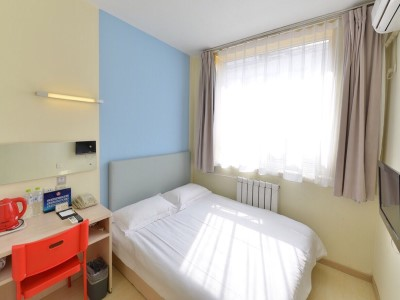
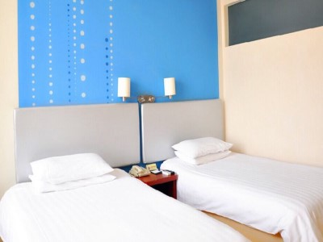
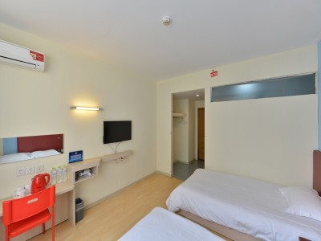
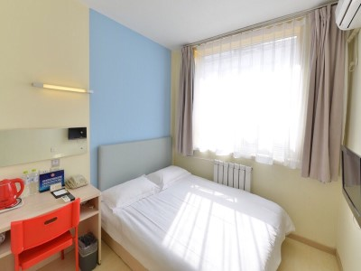
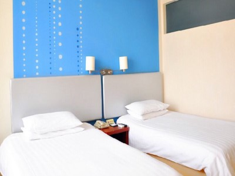
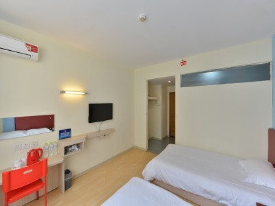
 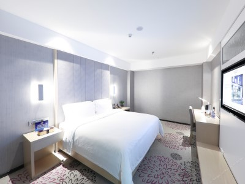
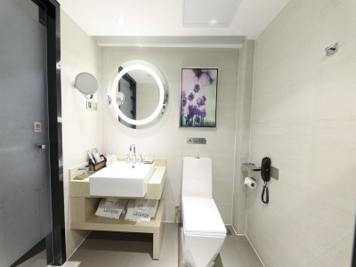
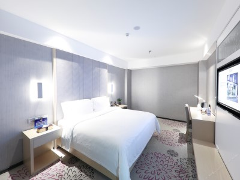
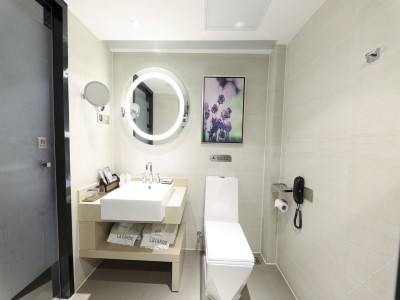


 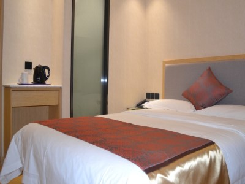
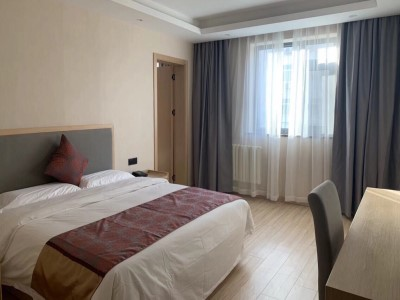
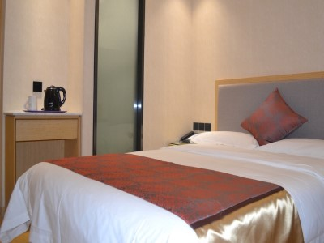
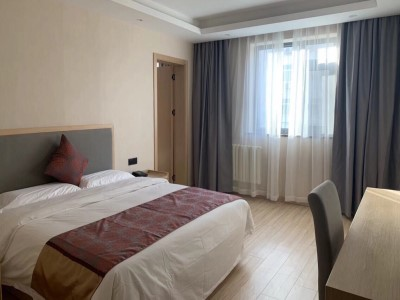